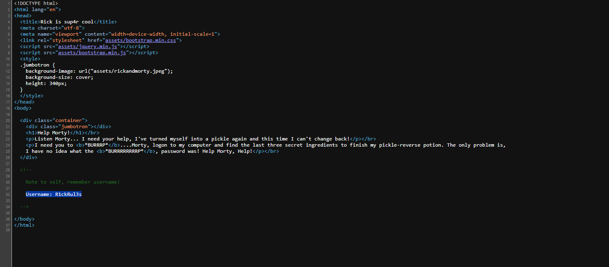
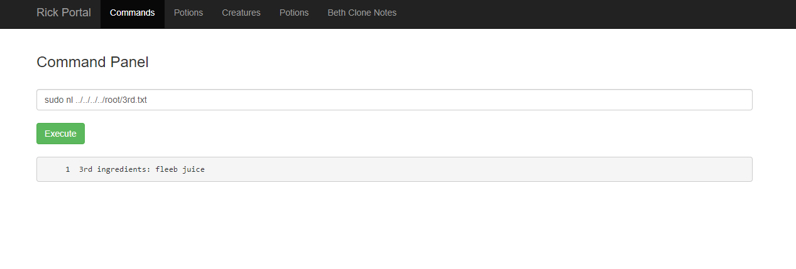

This Rick and Morty-themed challenge requires you to exploit a web server and find three ingredients to help Rick make his potion and transform himself back into a human from a pickle.
When starting the TryHackMe machine, we are provided with an IP through which we can explore vulnerabilities in a web application.
MACHINE IP: 10.10.28.128
First, I decided to scan the provided IP address using Nmap:
Nmap -v -n 10.10.28.128
And these were the discovered ports:
22/tcp open ssh
80/tcp open http
In the browser, we're presented with the following web page:

Analyzing the page's source code, a comment with a username is noticeable:
Username: R1ckRul3s
Next, using Gobuster to search for hidden directories, I found the following folders:

/robots.txt has some text. Considering we found a username, this could be a possible password. /assets didn't provide much usable information, so I used Gobuster again. This time, with the -x flag filtering directories ending with ".php" and ".txt", and the result was quite fruitful:
/login.php
/portal.php
On the /login.php page, I was able to use the previously found username and password to enter the /portal.php page, where there was an input for command execution. First, I used the "ls -la" command for a more detailed listing of the folder:
I tried to open the Sup3rS3cretPickl3Ingred.txt file using the "cat" command, but the input has a filter to make the challenge harder. So, I tried other commands until I could open the file with the "nl" command, thus obtaining the first ingredient:
[ FLAG 1 ] mr. meeseek hair
Using the same command, I could read the content of the clue.txt file and continued exploring the files within directories using the absolute path "../../" until I found the home folder:
cd ../../../../home/;ls
In the Home folder, I entered the rick folder and found the second ingredient file
cd ../../../../home/rick;ls
And I used "nl" to list its content, revealing the second flag:
cd ../../../../home/rick;nl second\ ingredient
(note the "\" so the shell understands the space between the words)
[ FLAG 2 ] jerry tear
Continuing with exploration using the absolute path, I tried to enter the root in the same way, but I didn't get any results. So, I ran the "sudo -l" command to see what user restrictions were in place.
The response stated that users have complete freedom in the system, so I used the sudo command directly to list files in the root directory and obtained the third flag:
sudo nl ../../../../root/3rd.txt
[ FLAG 3 ] fleeb juice
And that's it!
Can't wait for the next CTF!
If you think that I could have done this challenge in any other way, feel free to get in touch with me :)
See ya in the next write-up!